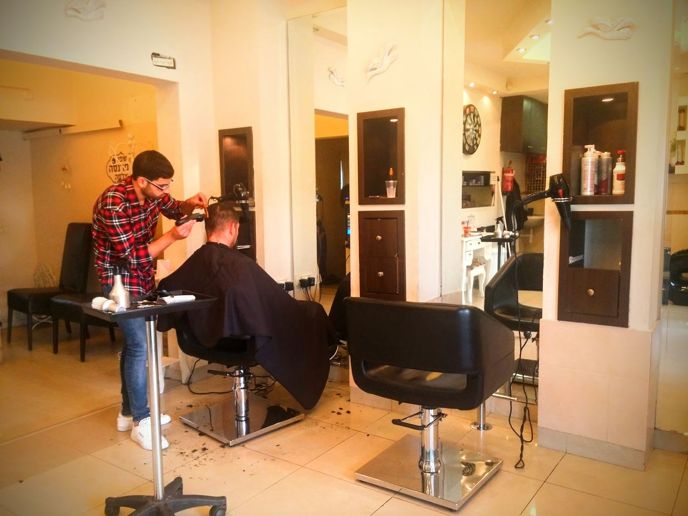
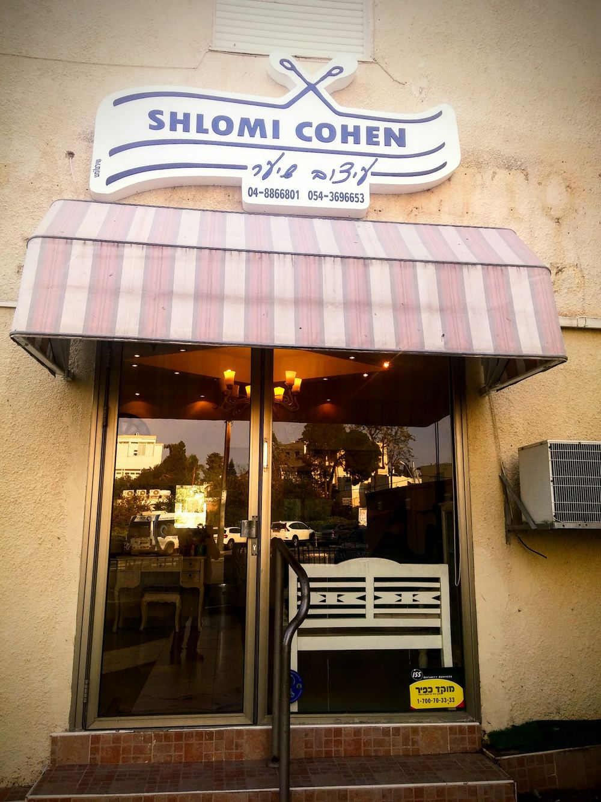
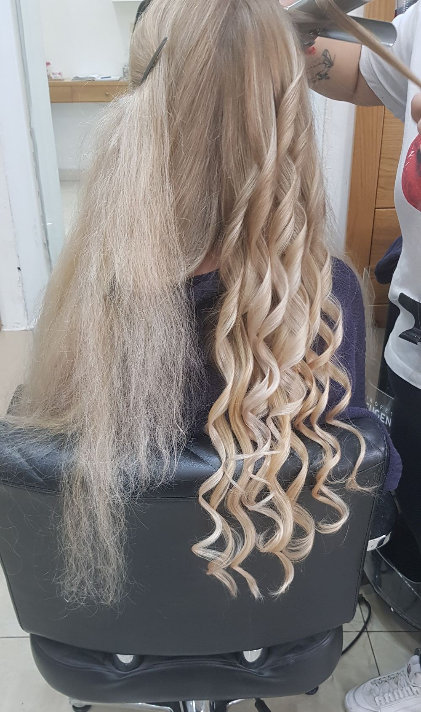

תספורתCuts
נשים, גברים וילדים, במספריים ובמסרק.Women, men and kids, with scissors and comb.
קונספט לדוגמה שנבנה עבור שלומי כהן - עיצוב שיער · זה אינו האתר הרשמי של העסקA sample concept built for Shlomi Cohen Hair Design · This is not the business’s official website
מספרה לנשים, לגברים ולילדים, ברחוב קומוי 9 במרכז זיו, חיפה.A salon for women, men and kids at 9 Komoy St, in Haifa’s Ziv Center.

מראות גבוהות, נברשות וכיסאות עור שחורים, במרכז זיו.Tall mirrors, chandeliers and black leather chairs, in the Ziv Center.


גררו את המראות · תמונות מתוך דף העסק בגוגלDrag the mirrors · photos from the business’s Google page
תספורת, צבע, גוונים ועיצוב, לנשים, לגברים ולילדים.Cuts, colour, highlights and styling, for women, men and kids.
נשים, גברים וילדים, במספריים ובמסרק.Women, men and kids, with scissors and comb.
צבע לכל השיער.All-over colour.
פסים של אור בשיער.Strands of light in the hair.
מסלסל, פן וסיום.Curling iron, blow-dry, finish.
קצר ומסודר.Short and neat.
הכיסא עולה, והתספורת מתחילה.The chair goes up, the cut begins.
תמונה אחת מהמספרה, באמצע העבודה.One photo from the salon, halfway through.
העבירו את הזכוכית המגדלת על התמונהMove the loupe over the photo
אין על שלומי. מקצועי, שירות מדהים, מקום נקי ונעים ומחירים סבירים. ממליצה!!
No one beats Shlomi. Professional, amazing service, a clean and pleasant place and reasonable prices. Recommended!!
שלומי בחור צעיר, ספר מעולה! אדיב, מקצועי ביותר, יודע להתאים לכל לקוח/ה את התספורת/ הצבע/ הגוונים המתאימים. נמצא ממש במרכז זיו. תמיד נותן שירות אישי! ונדיר במיוחד, כי לא מחכים הרבה זמן כמו במספרות רגילות. כל לקוח מקבל את הזמן שלו. ממליצה בחום.
Shlomi is a young guy and an excellent hairdresser! Kind, highly professional, he knows how to match each client with the right cut, colour and highlights. Right in the Ziv Center. Always gives personal service! And, quite rare, you don’t wait long like in ordinary salons. Every client gets their time. Warmly recommended.
סוף סוף מצאתי את הספר שלי בחיפה! שלומי ספר זריז, מוכשר ומאיר פנים. תודה גם למזי שמנצחת על המלאכה
At last I found my hairdresser in Haifa! Shlomi is quick, talented and warm. Thanks also to Mazi, who runs the show
התשובות מתוך דף העסק והביקורות בגוגל.Answers from the business’s Google page and reviews.
תספורות לנשים, לגברים ולילדים, צבע, גוונים ועיצוב שיער.Cuts for women, men and kids, colour, highlights and styling.
לקוחות כותבים שלרוב קובעים מראש, ולפעמים אפשר גם בהתראה קצרה. הכי פשוט לשאול את שלומי בוואטסאפ.Clients write that you usually book ahead, and sometimes short notice works too. The easiest way is to ask Shlomi on WhatsApp.
ברחוב קומוי 9 בחיפה, במרכז זיו. מעל הכניסה יש שלט לבן עם מספריים, וסוכך מפוספס.At 9 Komoy St, Haifa, in the Ziv Center. Above the door there’s a white sign with scissors, and a striped awning.
לפי הביקורות, החנייה באזור קצת בעייתית, ולרוב חונים בכחול-לבן ברחוב.According to reviews, parking nearby can be tricky; people usually use the blue-and-white street spaces.